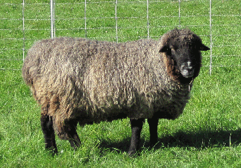

| Sherlock’s Adventure It was to be a quiet week, cleaning fleeces and getting them ready to sell at the Maine Fiber Frolic on Friday. Tuesday morning I arrived at William’s pasture to water and move the three ram yearlings and Sherlock, the breeding ram, to new grass. I was stunned to see the electric netting fence knocked over on one side and no sign of the four rams. The morning was still and calm with only the sound of birds, but no sheep. Trying to think like a sheep, I realized if they got spooked and pushed down the fence they probably ran out in that direction. I followed that direction looking all around for signs of “the boys.” At the edge of the field, I climbed over the stone wall and went into the adjacent field where the owners had just put in a new gravel road by the wall. I scanned the ten acre field for the black and gray rams and saw nothing. However, looking down I saw hoof prints in the sandy gravel. I followed them toward the main road and when the prints in that direction stopped, I followed them back down the field toward the lake. There were two slopes going down to the lake with a plateau in between. Walking down the first slope I kept calling “come boys”, “Sherlock”. All of a sudden I saw little black pointed ears, then heads appear as they climbed the slope toward me. Calling again, they came running, and then followed me back to their pen. I strengthened and enlarged their pen and added more red blinking security lights. The next morning, I found the pen fencing almost totally on the ground, two ram yearlings were grazing next to it, and one yearling and Sherlock were missing. Something had spooked them again. I herded the two rams into a new fenced grazing area and then began to look for the other two rams. I spent half the day looking all over the area and talking with neighbors. No sign of the sheep. I went home for a break and called a friend to let her know “the boys” were missing. The next morning my friend called with information they had been seen going up North Clary road. She had posted the rams missing on her Facebook page and the owner of a nearby stable, had seen the posting. The woman who had seen the sheep had stopped by the stable thinking they may have been their sheep. In the morning, with this new information I went up North Clary road, stopping at every house leaving information about the rams being lost. After I ran out of houses, checked all the fields and was going hoarse from calling “come boys, Sherlock.’ I went home for lunch. At 1:30 pm, the woman who had seen the rams on the road the night before called me. I drove to her house and she said they had gone across the neighbors field and down to the lake, probably to get water, as it had been a hot day. I grabbed two halters and a pan with sheep pellets. The neighbor had seen some hoof prints and sheep poop. I went down to the lake and saw hoof tracks leading to the water, and then followed them along the edge of the lake by the woods. |
|||||
|  | |||||
| I finally ran out of hoof prints and poop piles, but knew they had not turned around. I continued walking and calling “come boys, Sherlock.” After walking a long distance, I was almost ready to give up when after my calling I heard a little “baaah.” I called again “come boys, Sherlock” to make sure I was really hearing sheep. Another “Baaah.” Looking toward the sound, there standing at the edge of the woods were the two rams. I walked up to them and was able to put a halter on the yearling ram. I had to walk out through the woods to the nearby road and I knew Sherlock would follow. In the woods, I could see a newly built cottage. When I got the ram yearling onto the gravel driveway area, he went down on his knees and then laid down and would not move. He must have been exhausted. With encouragement and some pushing, I maneuvered him over to a small tree where I tied him up. I used the last of my sheep pellet treats in the pan to get Sherlock on a halter, and then tied him to the tree. I walked the long driveway to the road and back to my car. I drove home where Rob helped me hitch up the trailer and we went back to fetch the boys. They were patiently waiting as we came down the driveway. They eagerly got in the trailer, and we drove to the pasture to pick up the other two rams. The rams called back and forth expressing their delight at being together again. And, on Saturday, Sherlock’s fleece won first place at the Fiber Frolic. 6/16 |
|||||